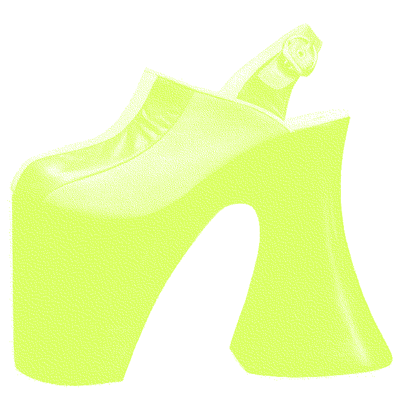

1) An etymology
2) Specific, concrete example/instance
3) A historical event
4)
A discipline/approach
/school of thought
5) A visual phenomenon
3)
When humans first climbed onto the platform shoes, It was simply for the practical
purpose of preventing external contaminants regardless of gender. Then the height of the shoes began to
deliver specific messages, It was much more of a status symbol. In ancient Japan and medieval Europe,
courtesans seduced their customers and expressed their status through the height of platform shoes. From the
1930s, the shoes offered the illusion of wonderfully long legs and were an essential part of sex appeal.
Except when the men in the west including disco musicians like Elton John slipped into a pair of platform
heels in the 70s, they were mainly for women. By the 90s, Platforms finally got the girl power treatment under
the influence of the Spice Girls. Even beyond the Spice Girls' influence, people who identified with the punk
and goth movement embraced platforms for their intimidating looks. To this day, the shoes are shown not simply
to increase height, but for more complex reasons.

T

2)
The digital platform refers to space that at once facilitates and conditions use.
It is an environment created so that producers and subscribers can directly participate and trade the value
they want to gain. The platform business model has the characteristics of a two-sided market where producers
and users can connect and exchange value. Google connects content creators and consumers who watch videos
through YouTube, while developing services that create value such as subtitles, translations, and comments,
enriching the value exchange between users on
both sides.
OR

4)
A platform is an architectural form that redefines and negotiates how the land
itself is made habitable. Even before sedentary life began, humans had leveled the ground as the most primary
form of inhabitation, and the act of raising and leveling the ground is linked to human domestication and the
gradual rise of sedentary domestic space. The use of the platform expanded to large-scale structures with the
rise of early cities, and platforms were stages of emphasizing to the public the actions that took place upon
them. It also served as a gathering place, a point of orientation and exchange among communities. To this day,
the entire urban world consists of platforms that enable or limit the use of the ground.
PLA

5)
A platform has a variable form at the construction site. The loading platform is
used to crane heavy building materials or scaffolding materials into the structure on multiple floors.
Box-shaped platforms, mainly made of hard materials such as steel, are sometimes used with additional
structures such as ladders. The platform moves vertically from the surface to the top of the building, and
these movements and structures are easily seen in cities.
F

1)
The word “platform” has many aspects of meaning. The meaning of “plan of action,
ground plan, sketch, design” originated from Old French plateforme, which is “flat+form”. Also, The meaning of
"raised, level surface or place" comes from the 1550s, especially "raised frame or structure with a level
surface." Specifically in geography, "flat, level piece of ground," by 1813. The meaning of railroad station;
raised walk along the track at a station for landing passengers and freight is from 1832.
M